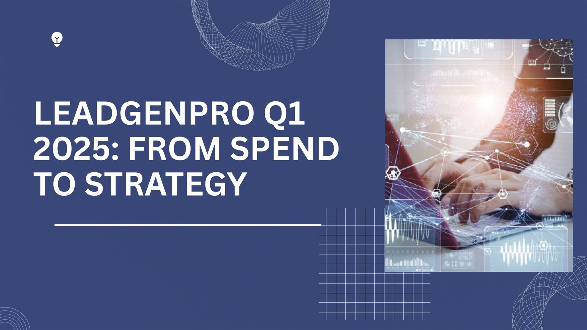
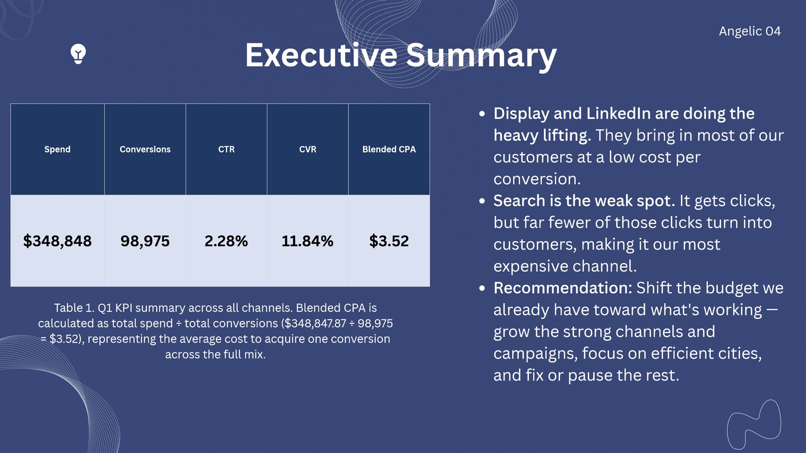
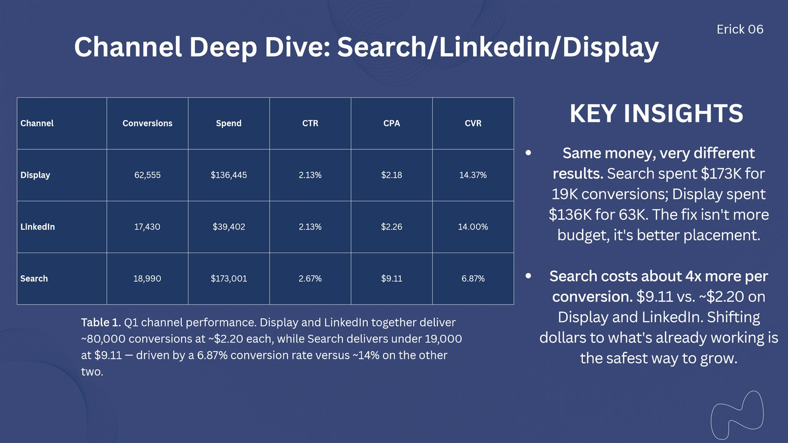
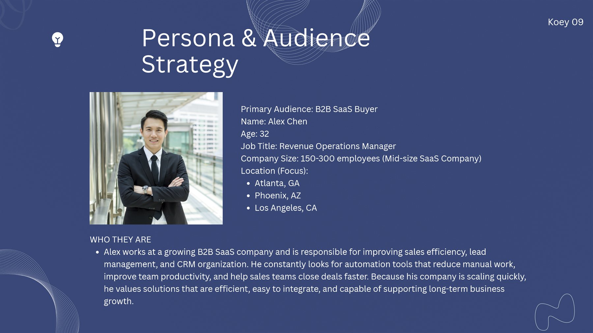
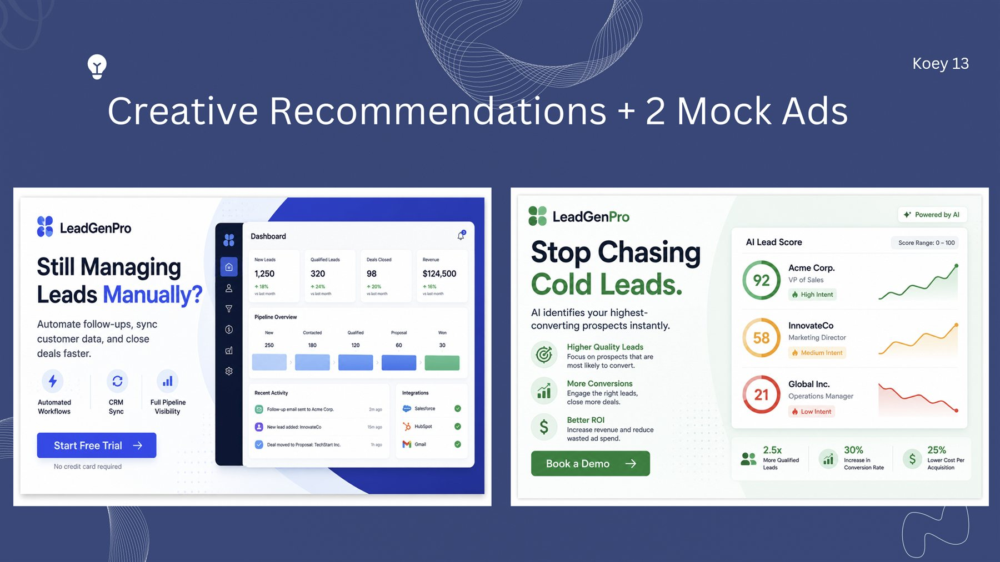
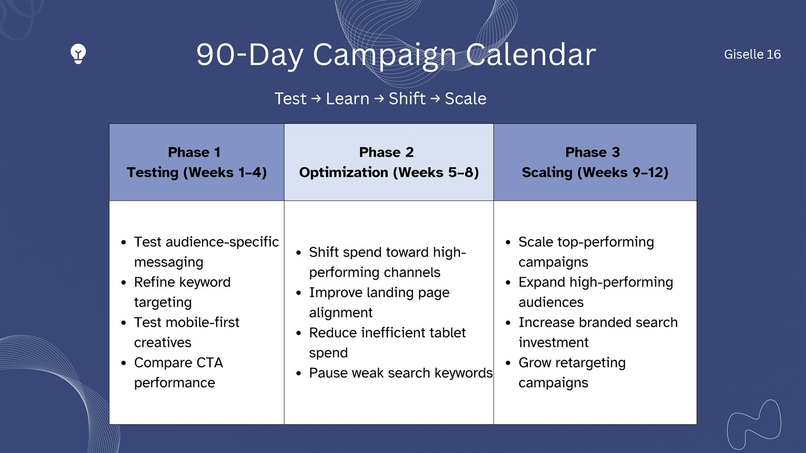
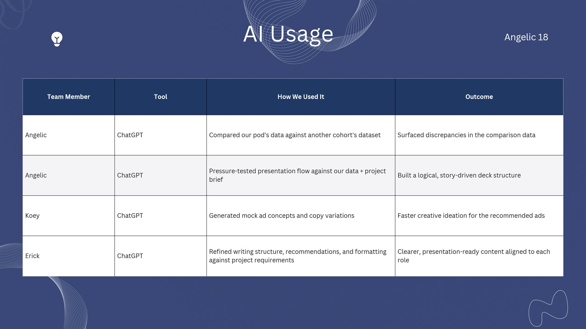
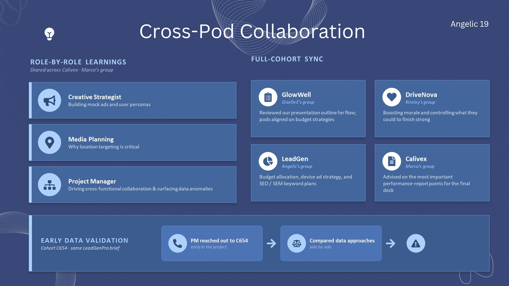
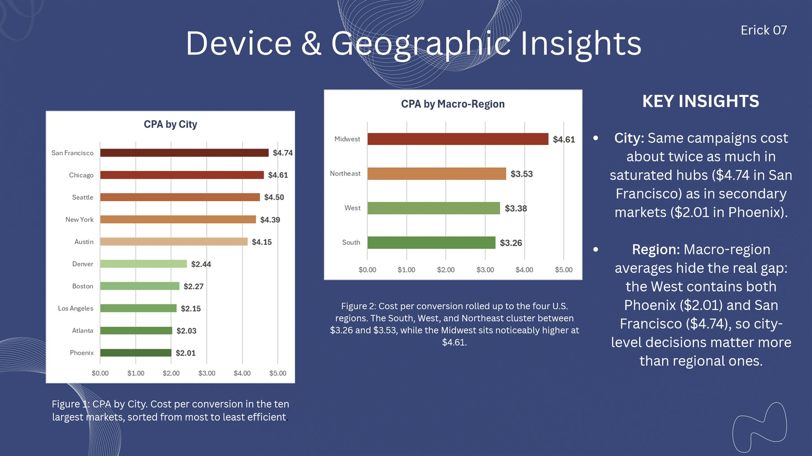
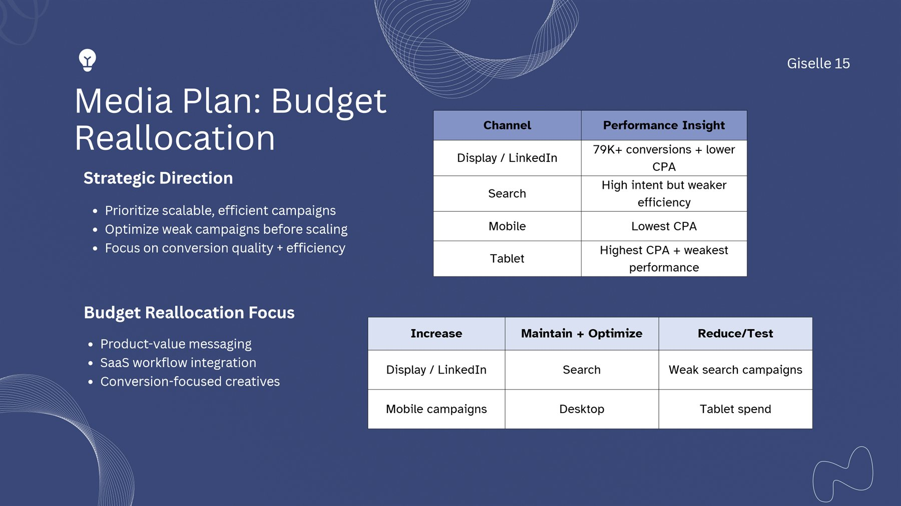

LeadGenPro: From Spend to Strategy
The final project for my digital marketing program. The client brief and ad data were simulated, and my team played the agency.






About the project
LeadGenPro sells sales software to other businesses. It ran ads on Google, on LinkedIn and across other websites, and it wanted to know which ones were worth the money.
My team of four played the agency. We reviewed three months of ad results and turned them into a 90-day plan. We measured success in sign-ups: people who clicked an ad, then started a free trial or booked a demo.
I was the project manager.
What the client asked for
- Show how the ads performed against their goals
- Compare Google, LinkedIn and display ads, by device and by city
- Describe the ideal customer, and make two sample ads for them
- Pick the search words worth paying for
- Recommend where to spend over the next 90 days
- Show how we used AI and worked with other teams
A few words used on this page:
- Search ads
- Ads that show up on Google when someone searches, like "CRM software."
- LinkedIn ads
- Ads in people's LinkedIn feeds, aimed at certain jobs and companies.
- Display ads
- Picture and banner ads on other websites and apps.
- Sign-up
- Someone who clicked an ad, then started a free trial or booked a demo. Marketers call this a "conversion."
- Cost per sign-up
- How much ad money was spent for each sign-up. Lower is better.
- CRM
- Software that companies use to keep track of their customers and sales.
- Persona
- A made-up but realistic profile of the ideal customer, used to decide who the ads are for and what they say.
- Search words
- The words people type into Google. Advertisers pick which ones their ads show up for. Also called "keywords."
- Tech hub
- A city full of tech companies and tech workers, like San Francisco.
What I did
Four people, four roles, one presentation. My job was to keep it on time, connected and correct.
- Ran the schedule, the task list and the team meetings, from kickoff on April 22 to the presentation on June 1
- Wrote the presentation outline: the story, the slide order and who owned each slide
- Built the final deck so it looked and read like one piece, and presented the opening and closing
- Reviewed everyone's work against the client's goals before it went in the deck
- Checked the numbers with our data analyst, and compared our data with a team from another class to catch errors early
- Helped our creative lead build the customer persona
- Logged every time the team used AI, and turned that log into our AI slide
- Set up feedback swaps with other teams in our class


What we found
The short version: the ads were working, but too much money was going to the wrong place.
- LinkedIn and display ads did the heavy lifting: about 80,000 sign-ups, at about $2 each
- Google search ads got half the budget but brought in less than a fifth of the sign-ups, at about $9 each
- Fewer people clicked the search ads than expected, and fewer of those clicks became sign-ups
- Every sign-up cost far less than the client's limit of $60 to $75
- Phones were the cheapest place to win sign-ups, with the most room to grow
- Location mattered: the same ads cost more than twice as much in San Francisco as in Phoenix

What we recommended
- Move money to LinkedIn, display and phone ads
- Fix search before spending more on it, and cut back on tablet ads and the weakest search ads
- Aim every ad at Alex, a busy manager who wants less manual work, with lines like "Close deals faster"
- Focus on Atlanta, Phoenix and Los Angeles, where ads cost less and worked better
- Pay for fewer, more specific search words, backed by helpful blog posts
- Test two new ads: "Still Managing Leads Manually?" and "Stop Chasing Cold Leads."
- Roll it out over 90 days: test, adjust, then scale what works

The result
We presented the plan to a review panel on June 1, 2026. The message was simple: don't spend more, spend smarter.
After an expert marketer reviewed our work, we corrected one finding: San Francisco is still worth it, even at twice the cost. It's a tech hub full of the people LeadGenPro sells to, and everything costs more there than in Phoenix, ads included.
The full presentation
Flip through all 20 slides below.